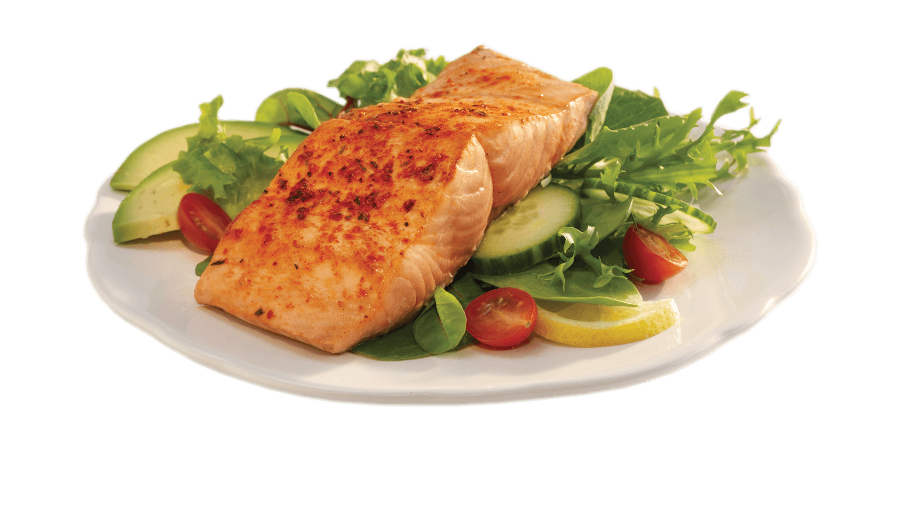

Butter Bathed Salmon

Ah salmon. The unicorn of the sea. No? Well these fish are beaitiful and they taste amazing!
This simple and tasty dish is enough to impress any house guest!
If you love salmon, you will absolutely love this dish! Nothing quite beats a simple recipe like butter bathed salmon garnished with lemon.
A quick sear on the stove, 5 minutes in the oven, and a smooth butter bath, you cannot go wrong!
Ingredients List:
- salmon fillets, skin on
- Salt
- Pepper
- 2 tblsp olive oil
- 4 tablespoons unsalted butter
- 2 cloves garlic, minced
- 1 lemon, thinly sliced
- Fresh parsley, chopped (for garnish)
- Preheat oven to 375f.
- Season both sides of salmon with salt and pepper to taste.
- In a large oven-safe skillet, heat olive oil over medium-high heat.
- Once the skillet is hot, carefully add the salmon fillets to the pan, skin-side down. Sear the salmon for about 3-4 minutes, or until the skin is crispy
and golden brown.
- Flip the salmon fillets over using a spatula and sear the other side for an additional 2-3 minutes. Remove the skillet from heat.
- transfer the skillet to the preheated oven and bake the salmon for 8-10 minutes, or until it is cooked through and flakes easy with a fork.
- While the salmon is baking, prepare the butter bath. In a small saucepan, melt the butter over medium heat.
- Add the minced garlic to the melted butter and cook for 1-2 minutes, or until fragrant.
- Once the salmon is cooked, carefully remove the skillet from the oven.
- Using a spoon, baste each salmon fillet with the melted butter and garlic mixture from the saucepan.
- Place a few slices of lemon on top of each salmon fillet
- Return the skillet to the stove over low heat and continue to baste the salmon with the butter mixture for another minute or two, until heated through.
- Garnish the butter-bathed salmon with chopped fresh parsley and serve immediately.